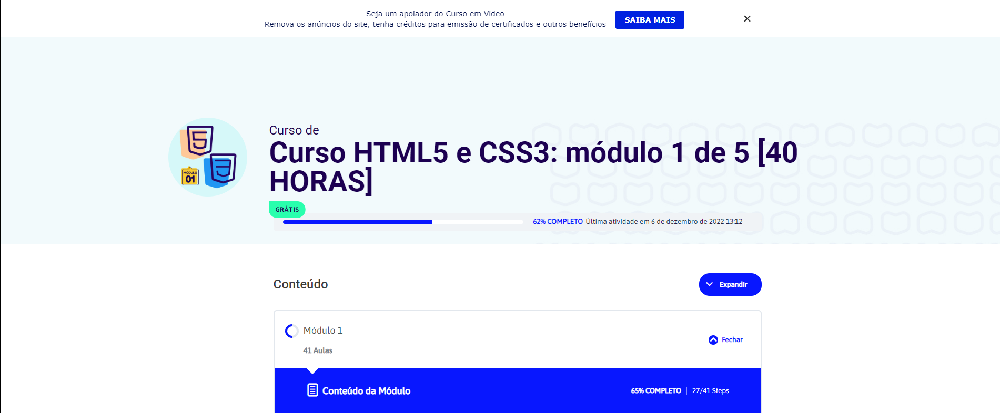

20 de dezembro de 2022
Primeiro curso de desenvolvimento

Iniciei meu primeiro curso de programação devido ao conselho de uma colega. Comecei com HTML5 e CSS3, mas
infelizmente o curso não me pegou, e comecei a acreditar que, talvez, a carreira não fosse pra mim.